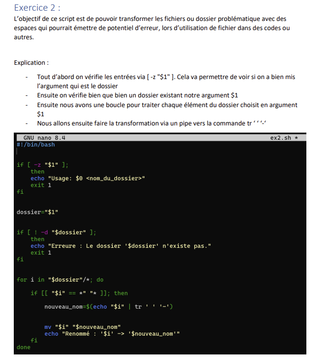
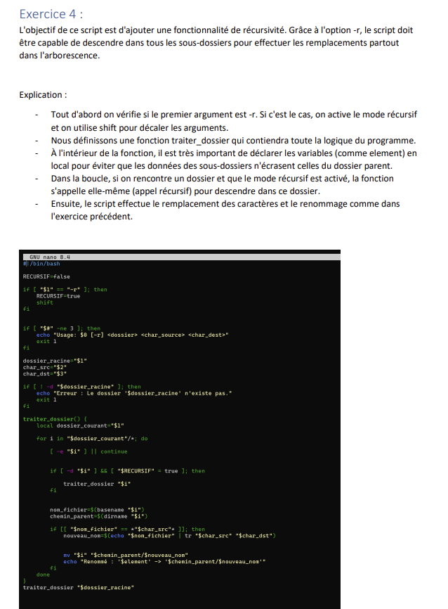
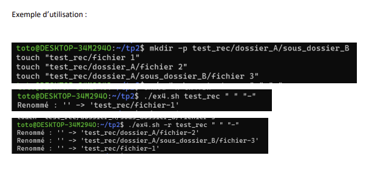
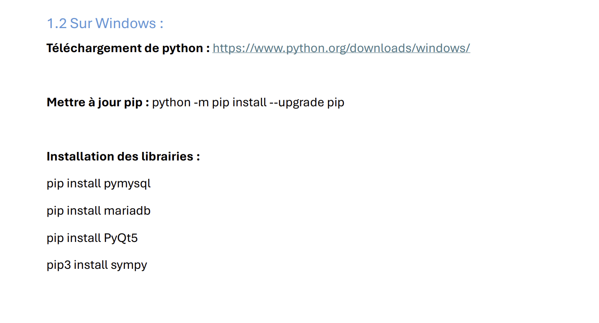
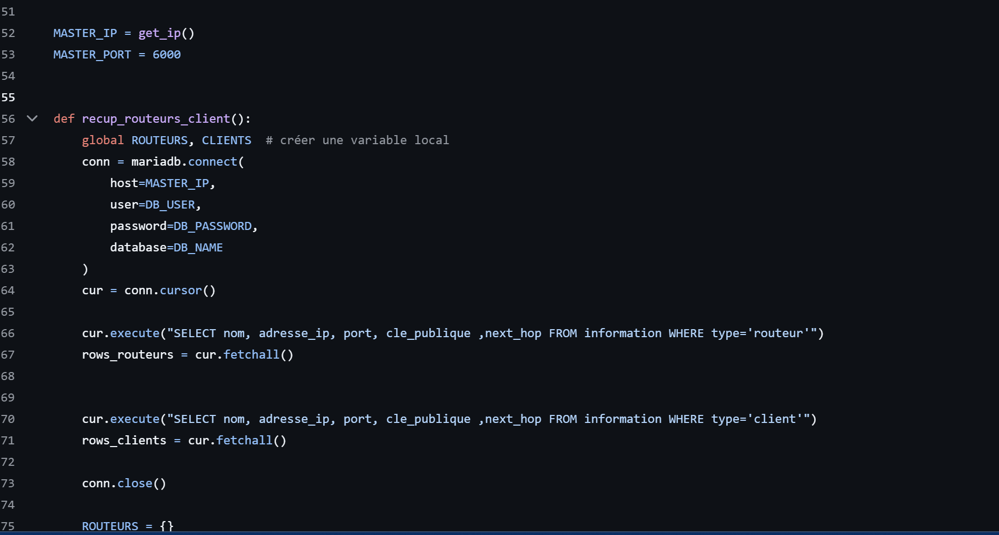
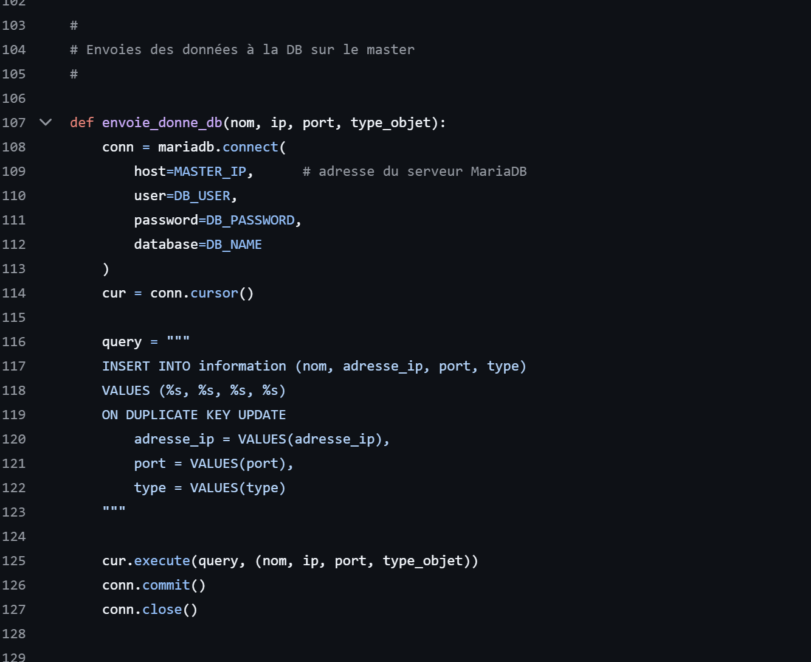

Développement d'applications réseau, interfaces graphiques et gestion de données en 2ème année.
AC23.01 : Automatiser l'administration système avec des scripts.
Introduction : L'administration système manuelle est une source d'erreurs et de perte de temps. Un technicien qui configure dix machines identiques à la main introduira inévitablement des différences entre elles. L'automatisation par scripts transforme une tâche répétitive et risquée en une procédure reproductible, traçable et vérifiable.
Dans le cadre du projet de SAÉ 3.02 "Conception d'une architecture distribuée avec routage en oignon", l'automatisation a été un prérequis indispensable pour déployer et configurer un environnement multi-machines cohérent. L'infrastructure repose sur plusieurs machines virtuelles VirtualBox — des VMs Debian 13 pour les nœuds routeurs et le master, et des VMs Windows 11 pour les clients — qui doivent toutes être configurées de façon identique et coordonnée avant même le lancement des scripts applicatifs.
La mise en place de l'environnement a commencé par la rédaction d'une procédure d'installation reproductible, documentée pas à pas dans les documents d'installation du projet. Celle-ci couvre la création des VMs sous VirtualBox avec des paramètres matériels précis (2 048 Mo de RAM minimum pour Debian, 4 096 Mo pour Windows, 15 Go de disque virtuel minimum), la configuration réseau en mode pont pour placer chaque VM dans le même sous-réseau que le poste hôte, et la vérification que l'adresse IP attribuée n'est pas celle du mode NAT par défaut (10.0.2.15). Cette procédure constitue en elle-même un script d'administration, même si elle est exprimée en langage naturel plutôt qu'en code.
Sur le plan purement scripting, les scripts Python du projet jouent un rôle d'automatisation de la configuration réseau. Le script router.py, une fois paramétré avec l'adresse IP du master dans la variable DB_HOST, s'enregistre automatiquement auprès du master via la base de données MariaDB centrale, déclare son nom, son adresse IP et son port, et charge la topologie réseau depuis la base. Ce mécanisme d'auto-enregistrement élimine toute configuration manuelle de chaque routeur : il suffit de lancer le script avec le nom et le port en argument (par exemple python3 router.py ROUTEUR1 15001) pour que le nœud intègre l'architecture distribuée sans autre intervention.
La gestion des dépendances a également été traitée de façon systématique. Sur Debian, l'installation des librairies Python nécessaires (python3-pymysql pour l'accès MariaDB, python3-pyqt5 pour l'interface graphique, python3-sympy pour les calculs mathématiques) a été scriptée sous forme d'une séquence de commandes apt reproductible. Sur Windows, pip a été utilisé pour installer les mêmes dépendances. Cette dualité de systèmes d'exploitation a imposé de maintenir deux procédures d'installation parallèles mais fonctionnellement équivalentes, un exercice concret de portabilité d'environnement.
Le module R3.08, consacré à la gestion des erreurs et aux tests unitaires en Python, a renforcé la robustesse des scripts produits. Tout script d'administration qui interagit avec des ressources externes — une base de données, un socket réseau, un fichier — peut rencontrer des erreurs imprévisibles : serveur indisponible, port déjà occupé, permissions insuffisantes. La maîtrise des mécanismes try/except/finally de Python permet d'anticiper ces situations et d'y répondre de façon contrôlée plutôt que de laisser le script s'interrompre brutalement, ce qui serait particulièrement problématique dans un contexte d'administration automatisée où personne n'est peut-être devant l'écran pour constater et corriger l'erreur.

[ CAPTURE À AJOUTER : Script d\'automatisation router.py ou configuration initiale ] Chemin : images/but2prog/ac1.1.png
'" />

[ CAPTURE À AJOUTER : Commandes d\'installation des dépendances Debian/Windows ] Chemin : images/but2prog/ac1.2.png
'" />

[ CAPTURE À AJOUTER : Gestion des exceptions try/except en R3.08 ] Chemin : images/but2prog/ac1.3.png
'" />
R3.08 : Qualité de développement
SAÉ 3.02 : Architecture distribuée avec routage en oignon
AC23.02 : Développer une application à partir d'un cahier des charges donné, pour le Web ou les périphériques mobiles.
Introduction : Passer d'un cahier des charges écrit à une application fonctionnelle est le cœur du métier de développeur. Cette traduction exige de comprendre les exigences fonctionnelles, de les décomposer en tâches de développement, de choisir les technologies adaptées et de livrer un résultat qui correspond à ce qui a été demandé — ni plus, ni moins.
La SAÉ 3.02 nous a demandé de concevoir et développer une application distribuée complète répondant à un cahier des charges précis : implémenter un routage en oignon inspiré du principe de Tor, dans lequel un message envoyé par un client transite par un nombre configurable de routeurs intermédiaires avant d'atteindre sa destination, chaque routeur ne connaissant que son prédécesseur et son successeur dans la chaîne, jamais l'origine ni la destination finale.
L'application a été développée en Python et se décompose en trois composants distincts correspondant aux trois rôles de l'architecture. Le master est le nœud central de contrôle : il héberge une interface graphique développée avec PyQt5 permettant à l'administrateur de visualiser en temps réel la liste des équipements connectés, de définir les liaisons de topologie (next hops) entre eux, et d'envoyer des commandes de rechargement de la base de données à tous les routeurs simultanément. L'interface du master propose quatre onglets fonctionnels : l'accueil (logs, chemins générés, IP du master, bouton d'actualisation), l'ajout d'équipements (formulaire de création de routeur ou client avec nom, port et dossier de scripts), la topologie réseau (sélection des next hops par équipement avec mise à jour automatique lors de la connexion d'un pair), et les commandes routeurs (diffusion globale de la commande de rechargement).
Le routeur est un nœud intermédiaire sans interface graphique, lancé en ligne de commande avec son nom et son port en paramètres. Il se connecte à la base MariaDB pour récupérer la topologie, écoute les connexions entrantes sur son port déclaré, et retransmet les messages vers le next hop approprié selon le chemin calculé par l'algorithme de routage. Le client dispose d'une interface graphique PyQt5 qui permet à l'utilisateur de renseigner l'adresse IP et le port du master, de se connecter pour charger la topologie, de sélectionner un destinataire dans une liste déroulante, de choisir le nombre de sauts souhaités, de saisir un message et de l'envoyer. La zone "Messages reçus" affiche en temps réel les messages parvenus au client.
Le développement de cette application a imposé une décomposition rigoureuse des responsabilités entre les trois composants, une gestion soignée des threads (chaque connexion entrante est traitée dans un thread séparé pour ne pas bloquer l'interface graphique), et une attention particulière à la cohérence des données entre la base MariaDB et l'état courant des nœuds connectés. Le bouton "Actualiser" de l'interface master et la commande "Recharger la DB des routeurs" répondent précisément à ce besoin de resynchronisation lors de modifications de topologie en cours d'exécution.
SAÉ 3.02 : Architecture distribuée avec routage en oignon
AC23.03 : Utiliser un protocole réseau pour programmer une application client/serveur.
Introduction : Une application réseau n'est pas qu'un programme qui "envoie des données". Elle repose sur un protocole précis qui définit comment les données sont structurées, dans quel ordre elles sont échangées, et comment les erreurs sont gérées. Maîtriser la programmation socket est la porte d'entrée vers la compréhension de tous les protocoles applicatifs.
Le projet de routage en oignon est, dans son essence, une application client/serveur multi-niveaux. Chaque nœud de l'architecture — master, routeurs, clients — est à la fois serveur (il écoute des connexions entrantes) et client (il initie des connexions vers d'autres nœuds). Cette architecture peer-to-peer supervisée par un master central a nécessité une maîtrise solide de la programmation socket en Python.
La communication entre les nœuds repose sur des sockets TCP, choisis pour leur fiabilité : contrairement à UDP, TCP garantit la livraison des messages dans l'ordre et sans perte, ce qui est indispensable dans un système de routage où chaque message doit parvenir à destination intact. Chaque nœud écoute sur un port unique (les ports au-dessus de 10 000 sont recommandés pour éviter les conflits avec les ports système), déclaré lors du lancement du script. Le master écoute sur le port 6000, les routeurs et clients sur des ports distincts attribués à la création.
L'implémentation du routage en oignon adds une couche de complexité au-dessus des sockets bruts. Lorsqu'un client envoie un message à destination d'un autre client avec un nombre de sauts donné, l'algorithme calcule un chemin dans le graphe de topologie en respectant le nombre de sauts demandé, puis encapsule le message en "pelures d'oignon" : chaque routeur du chemin ne connaît que le nœud suivant vers lequel retransmettre, sans jamais voir le contenu du message original ni connaître l'origine ou la destination finale. Ce principe, emprunté au réseau Tor, garantit l'anonymisation du trafic dans le réseau simulé.
La gestion de la concurrence est un défi central dans ce type d'application. Si un routeur traite une connexion entrante de façon synchrone (en bloquant jusqu'à la fin du traitement), il ne peut pas accepter simultanément d'autres connexions. La solution adoptée repose sur le multithreading Python : chaque connexion entrante est déléguée à un thread dédié, libérant immédiatement le thread principal pour accepter la connexion suivante. Cette architecture est représentative des serveurs réseau réels, qu'il s'agisse d'un serveur web, d'un broker MQTT ou d'un serveur de base de données.
La synchronisation entre les nœuds et la base de données centrale constitue un second protocole, de niveau applicatif cette fois. Quand un routeur démarre, il interroge MariaDB pour récupérer la liste complète des nœuds et leurs next hops. Quand le master modifie la topologie, il envoie une commande "rechargement_db" à tous les routeurs connectés via leurs sockets, déclenchant une resynchronisation immédiate. Ce mécanisme garantit que tous les nœuds partagent en permanence la même vision de la topologie, condition indispensable au bon fonctionnement du routage.
SAÉ 3.02 : Architecture distribuée avec routage en oignon
AC23.04 : Installer, administrer un système de gestion de données.
Introduction : Dans toute application distribuée, la persistance et le partage des données entre plusieurs processus exige un système de gestion de bases de données. Savoir installer, configurer et administrer ce système est une compétence indissociable du développement d'applications réseau.
Le projet de routage en oignon s'appuie sur une base de données MariaDB hébergée sur la VM master pour centraliser toutes les informations de topologie du réseau : nom de chaque nœud, adresse IP, clé publique, type (routeur ou client), port d'écoute et liste des next hops. Ce choix de centraliser la topologie en base plutôt que de la distribuer statiquement dans des fichiers de configuration présente un avantage majeur : toute modification de topologie est immédiatement disponible pour tous les nœuds après rechargement, sans avoir à modifier manuellement les fichiers de chaque équipement.
L'installation de MariaDB a été réalisée manuellement en ligne de commande sur la VM Debian jouant le rôle de master. Après l'installation du paquet mariadb-server via apt, le service a été lancé et son état vérifié avec systemctl. La connexion initiale en tant que root a permis de créer la base de données "Basededonnee" et la table "information" avec le schéma adapté aux besoins du projet : un identifiant auto-incrémenté, un nom unique par nœud, l'adresse IP, la clé publique (pour les aspects cryptographiques du routage en oignon), le type, le port et le champ next_hop au format texte.
La configuration de l'accès réseau à MariaDB a nécessité une modification du fichier de configuration du service. Par défaut, MariaDB n'écoute que sur l'interface localhost (127.0.0.1), ce qui empêche les VMs distantes d'accéder à la base. Modifier le paramètre bind-address à 0.0.0.0 dans le fichier /etc/mysql/mariadb.conf.d/50-server.cnf permet à MariaDB d'accepter des connexions depuis toutes les interfaces réseau. Cette manipulation, bien que simple, illustre un principe de sécurité important : par défaut, les services n'exposent que le strict nécessaire, et c'est à l'administrateur de décider explicitement d'élargir l'accès.
La création d'un utilisateur dédié (distinct du compte root) avec des droits limités à la seule base "Basededonnee" relève également de la bonne pratique d'administration. L'utilisateur applicatif n'a pas besoin des droits d'administration globaux de root : lui attribuer uniquement les droits GRANT ALL PRIVILEGES sur sa propre base, en utilisant la syntaxe 'utilisateur'@'%' pour autoriser les connexions depuis n'importe quelle IP, suffit pour le fonctionnement de l'application tout en limitant les risques en cas de compromission des identifiants applicatifs.
Côté application, la librairie pymysql de Python assure la communication avec MariaDB. Les scripts router.py et client.py utilisent ces connexions pour charger la topologie au démarrage et la rafraîchir sur réception de la commande de rechargement. La robustesse de ces connexions à la base a été renforcée grâce aux mécanismes de gestion d'exceptions étudiés en R3.08 : une tentative de connexion qui échoue (base inaccessible, identifiants incorrects) lève une exception que le script capture pour afficher un message d'erreur explicite plutôt que de planter silencieusement.
R3.09 : Bases de données avancées
R3.08 : Qualité de développement
SAÉ 3.02 : Architecture distribuée avec routage en oignon
AC23.05 : Accéder à un ensemble de données depuis une application et/ou un site web.
Introduction : Une application qui ne sait pas lire ni écrire des données persistantes est une application limitée. La capacité à interroger une base de données depuis du code applicatif, à filtrer les résultats, à les mettre à jour et à réagir aux erreurs de façon robuste est une compétence fondamentale du développeur moderne.
L'accès aux données depuis les scripts Python du projet repose sur la bibliothèque pymysql, qui implémente le protocole MySQL/MariaDB côté client. Chaque composant — master, routeur, client — dialogue avec la base de données selon ses besoins propres, mais tous partagent la même structure de connexion : définition des paramètres de connexion (hôte, nom de base, utilisateur, mot de passe), établissement de la connexion, création d'un curseur pour exécuter les requêtes SQL, traitement des résultats, et fermeture propre de la connexion.
Les requêtes SQL utilisées dans le projet varient selon les opérations fondamentales du CRUD. L'insertion d'un nouveau nœud lors de son premier enregistrement auprès du master utilise un INSERT INTO avec les champs nom, adresse_ip, type et port. La lecture de la topologie par les routeurs et clients utilise un SELECT sur la table information pour récupérer la liste complète des nœuds et leurs next hops. La mise à jour des next hops d'un nœud depuis l'interface master utilise un UPDATE avec une clause WHERE sur le nom du nœud. Ces opérations, bien que basiques en apparence, doivent être gérées avec rigueur pour éviter les injections SQL et les incohérences de données.
L'interface graphique du master offre une visualisation dynamique des données stockées en base. La vue topologique affiche en temps réel les relations entre équipements sous la forme "ROUTEUR1 → CLIENT1", "CLIENT1 → ROUTEUR1", etc., en interrogeant la base à chaque actualisation. Cette synchronisation entre la base de données et l'affichage graphique illustre le pattern MVC (Modèle-Vue-Contrôleur) : la base est le modèle, l'interface PyQt5 est la vue, et les méthodes Python qui pilotent la mise à jour sont le contrôleur.
La gestion des erreurs d'accès aux données a été travaillée en profondeur dans le module R3.08. Un try/except encadrant chaque accès à la base permet de distinguer les erreurs de connexion (OperationalError quand le serveur est inaccessible), les erreurs de requête (ProgrammingError en cas de SQL malformé) et les violations de contraintes (IntegrityError quand on tente d'insérer un nœud avec un nom déjà existant, qui doit être unique selon la contrainte UNIQUE sur la colonne nom). Chaque cas d'erreur déclenche un comportement spécifique dans l'application : message d'erreur à l'utilisateur, tentative de reconnexion, ou abandon gracieux de l'opération.
Les tests unitaires réalisés avec pytest dans le cadre de R3.08 complètent cette compétence. En écrivant des tests qui vérifient le comportement des fonctions d'accès aux données — par exemple, qu'une insertion de nœud retourne bien un identifiant valide, ou qu'une requête de lecture sur un nœud inexistant retourne une liste vide plutôt que de lever une exception — on garantit que les évolutions du code ne régressent pas sur les fonctionnalités existantes. Cette pratique du test automatisé est d'autant plus précieuse dans un projet multi-composants où une modification dans la structure de la base peut impacter plusieurs scripts simultanément.

[ CAPTURE À AJOUTER : Visualisation dynamique de l\'interface PyQt5 (Pattern MVC) ] Chemin : images/but2prog/ac5.1.png
'" />

[ CAPTURE À AJOUTER : Requêtes CRUD (SELECT / INSERT) en pymysql ] Chemin : images/but2prog/ac5.2.png
'" />

[ CAPTURE À AJOUTER : Tests unitaires automatisés réalisés avec pytest ] Chemin : images/but2prog/ac5.3.png
'" />
R3.08 : Qualité de développement
R3.09 : Bases de données avancées
R3.10 : Programmation événementielle
SAÉ 3.02 : Architecture distribuée avec routage en oignon